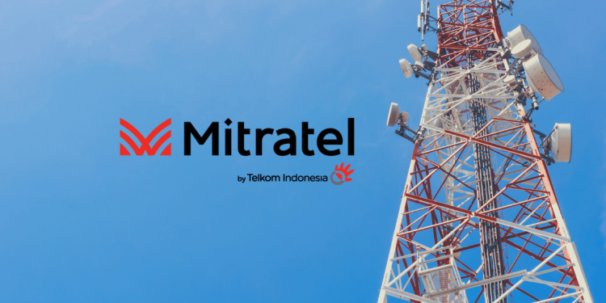

IVAN ANDRI WAHYUDI
IPO MITRATEL

-
Anak usaha PT Telkom Indonesia Tbk (TLKM) yakni PT Dayamitra Telekomunikasi (Mitratel) telah menyelesaikan proses penawaran awal atau bookbuilding dalam rangka Penawaran Umum Saham Perdana (Initial Public Offering/IPO) pekan
lalu. Perusahaan menara tersebut menetapkan harga penawaran IPO di level Rp 800 per saham. Dengan melepas sebanyak 25,54 miliar saham, perusahaan berpeluang menghimpun dana segar senilai Rp 20,43 triliun. Associate Director of
Research and Investment Pilarmas Investindo Sekuritas Maximilianus Nico Demus mengungkapkan, sebagai pemain lama di industri menara, Mitratel memiliki peluang tumbuh di masa depan. Dengan penetapan harga IPO, Maximilianus
menilai masih ada ruang untuk kenaikan harga pasca IPO. “Kami melihat dengan harganya Rp 800 per saham masih ada ruang bagi Mitratel (harga sahamnya) untuk mengalami kenaikan, karena fair price-nya itu Rp 1.050 per saham,” kata
Maximilianus kepada Kompas.com, Selasa (9/11/2021).
-
Namun demikian, Maximilianus melihat Mitratel masih dibayangi oleh tantangan di masa depan. Sebagai perusahaan yang masuk dalam tiga pemain besar menara, sejajar dengan Sarana Menara Nusantara (TOWR) dan Tower Bersama
Infrastructure (TBIG), Mitratel secara dimensi dinilai masih kecil. “Baru kali ini, melakukan IPO dan langsung masuk big three (tiga besar) pemain menara. Secara jumlah, Mitratel merupakan yang terbesar diantara TOWR dan TBIG.
Tapi secara dimensi masih kecil,” kata Maximilianus. Namun, ia optimis dengan dukungan lebih dari 28.000 menara yang tersebar, IPO akan menjadi kesempatan Mitratel menggaet banyak penyewa menara. “Dengan dukungan 28.000 menara
yang tersebar dari Sabang sampai Merauko, ini akan menjadi tolak ukur baru, dan menjadi kesempatan bagi Mitratel untuk bisa mengundang lebih banyak lagi tenant,” tegas dia.
-
Stock Split BCA
PT Bank Central Asia Tbk. atau BCA resmi melakukan stock split atau pemecahan saham setelah memperoleh persetujuan dari Bursa Efek Indonesia. Seusai stock split, saham BBCA akan resmi diperdagangkan dengan harga baru, Rabu, 13
Oktober 2021. Baca lebih lanjut
-
Right Issue Bank BRI
PT Bank Rakyat Indonesia Tbk. (BBRI) sukses melakukan right issue senilai Rp96 triliun, terbesar sepanjang sejarah Bursa Efek Indonesia Bahkan, rights issue BBRI menjadi yang terbesar di kawasan Asia Pasifik serta masuk tujuh
besar di peringkat global sejak 2009.Baca lebih lanjut
-
Laba XL Axiata Turun 51 Persen di Q3 2021
Emiten telekomunikasi PT XL Axiata Tbk. mengalami penurunan laba bersih secara tahunan hingga kuartal III/2021. Penurunan tersebut akibat turunnya keuntungan dari penjualan dan sewa balik menara telekomunikasi.
Baca lebih lanjut
-
Fatwa MUI Menetapkan Cryptocurrency Haram
Majelis Ulama Indonesia (MUI) mengharamkan penggunaan cryptocurrency atau uang kripto sebagai mata uang. Keputusan itu diambil dalam Forum Ijtima Ulama yang digelar di Hotel Sultan, Kamis (11/11/2021).
Baca lebih lanjut